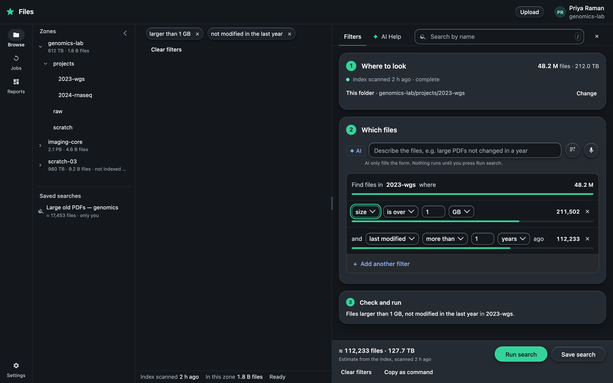
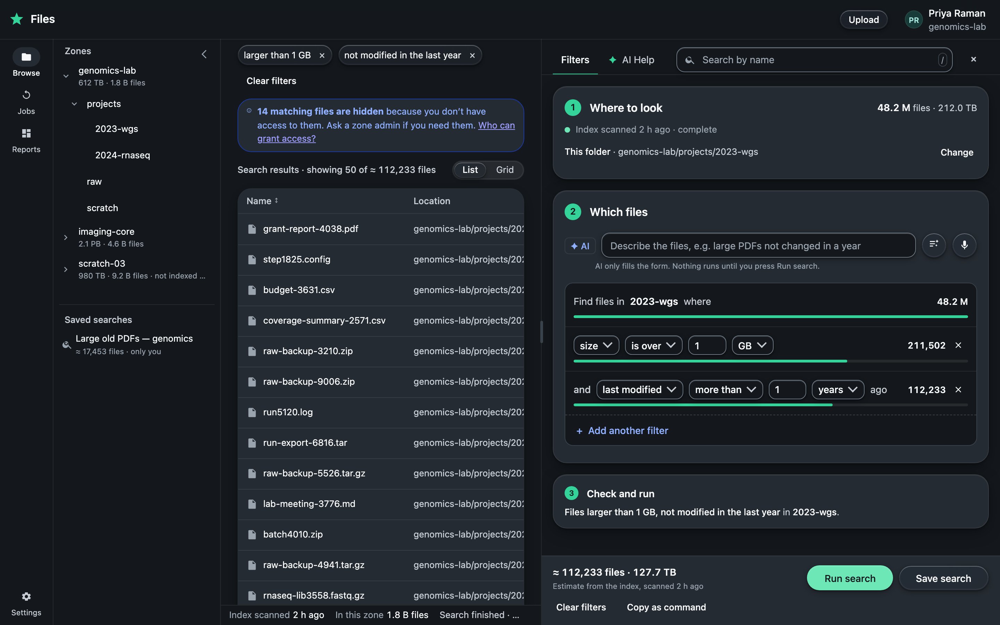
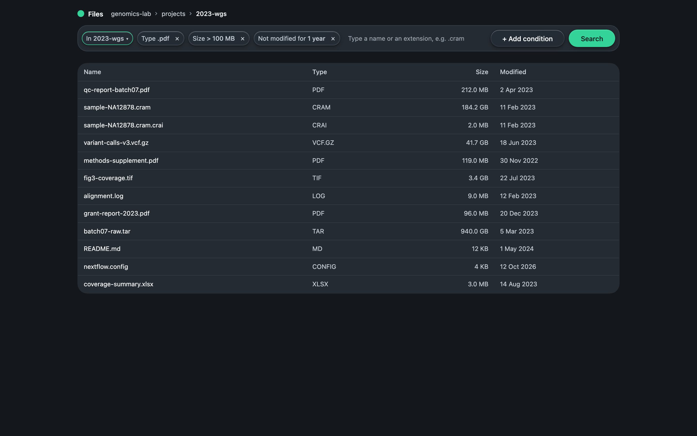
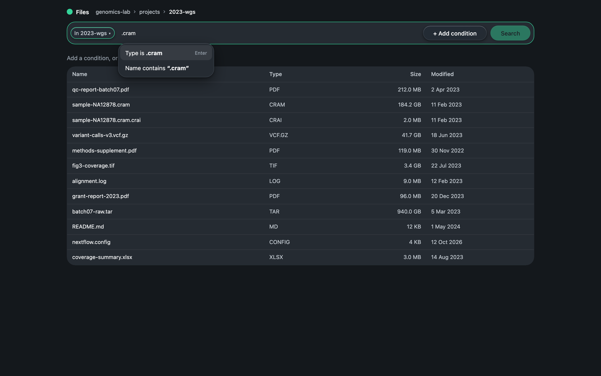
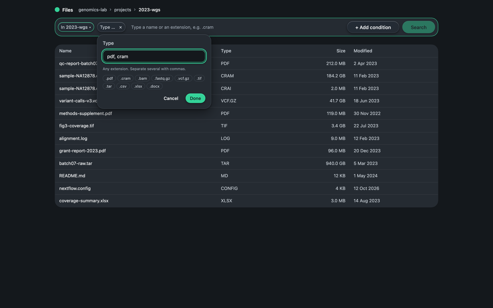
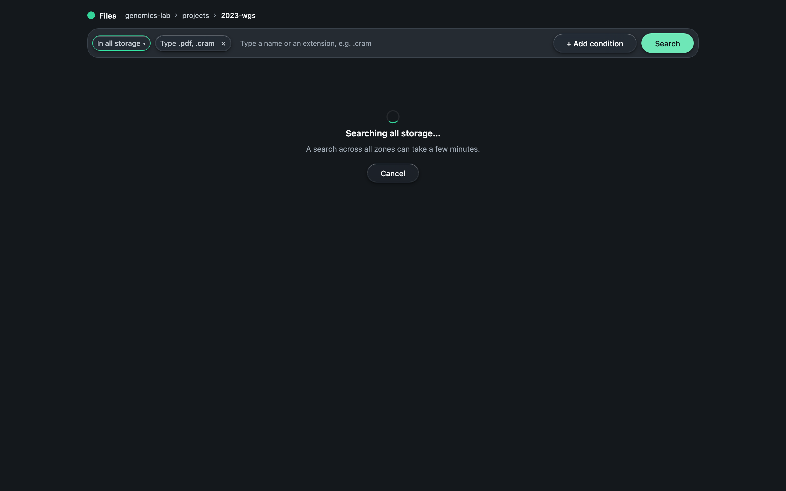

Case study · design task · 2026
File search for a billion-file browser: before and after feedback
I designed a search form, got it rejected for being too complex, and rebuilt it as one bar of conditions above the file list.
- BriefA simple, ergonomic form to search files by a few basic conditions, in a folder or in all storage. Flow ends at Run.
- First answerA full product around the form: side panel, three steps, live counts, AI assistant, saved searches, results.
- FeedbackToo much around the search. A custom file extension was hard to find. The AI added no value.
- Second answerOne bar: location, conditions as chips, any extension by typing it, Search.
Before what I sent
A side panel with three numbered steps, a count under every condition, an AI field, and the whole file browser around it.


Feedback from the reviewers, and what it changed
| Reviewers said | Change |
|---|---|
| Side elements drew more attention than the search | One bar above the list. No panel, steps, counts or results. |
| A custom extension was very hard to search | Type “.cram” and press Enter: “Type is .cram”. Any extension works. |
| The AI assistant felt bolted on | Removed. The brief asked to build with AI, not to add AI. |
| Location was shown twice and changed in the less visible place | One chip, first in the bar. It shows the location and changes it. |
| Research was too long; the prototype was hard to reach | This page, and one link to each prototype. |
After the core task in the fewest steps




What I learned
- Restraint shows maturity. Every extra weakened the proof that the user reaches the goal fast.
- Limiting words are a ceiling. “Simple” and “a few basic conditions” should have cut the scope on day one.
- Solve the brief’s own example first, then its nearest variant: any extension, not only PDF.
- One fact, one place, editable where it is shown.
- With AI tools, my job is editing. AI made adding cheap; I set a budget and cut.
- Five minutes with one fresh person would have caught the extension and location problems.
Client details are anonymized; file names and data are invented. Built on my design system Big Hat; prototypes built with Claude Code.